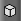
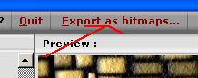
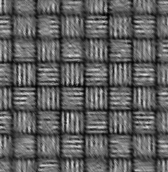
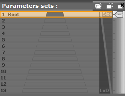
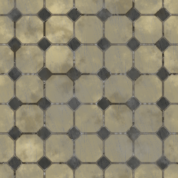

Vous commencez à maîtriser les 3 dimensions, que ce soit en programmation ou en modélisation ? Vous avez donc dû constater qu'il n'est pas toujours simple de trouver des textures, qui sont un élément important des graphismes. Je vous propose donc de créer vos propres textures grâce à MaPZone. Ainsi vous ne manquerez plus de textures ! De plus, les textures créées avec MaPZone sont des textures procédurales, ce qui signifie qu'elles sont générées par des calculs mathématiques et que, par conséquent, elles s'ajustent parfaitement.
Après avoir installé MaPZone, nous allons commencer par nous accoutumer à l'interface avant de réaliser notre première texture dans la prochaine partie. Allez, à l'assaut de MaPZone ! :pirate:
MaPZone est un logiciel gratuit développé par Allegorithmic. Le téléchargement se fait ici mais n'est malheureusement fourni que sous Windows. :'( Pour les utilisateurs de Linux, vous pourrez toujours utiliser Wine, ça fonctionne. Il n'y a aucune difficulté en ce qui concerne l'installation, il suffit de cliquer sur « Suivant » ! :p Je vous laisse donc le faire tout seuls.
Lorsque vous démarrez MaPZone, voici l'écran d'accueil :
C'est en fait un explorateur des dossiers de votre ordinateur. En explorant ces dossiers, vous avez dû constater qu'il y a déjà des textures qui sont fournies avec le logiciel. Ce sont des exemples. Il y a cependant un dossier particulier : le dossier « New ». En effet, il ne contient que la texture New, qui est une texture vide. Elle va nous permettre de créer des nouvelles textures. Pour cela, double-cliquez dessus. Une nouvelle fenêtre s'ouvre (cliquez sur l'image ci-dessous pour l'agrandir) :
La fenêtre d'édition
Dans cette fenêtre, vous avez peut-être remarqué trois onglets sur les côtés : Presets, 3D Edit et FX-MaP. Vous pouvez cliquer sur la flèche située au-dessus des noms pour ouvrir les onglets (par défaut, l'onglet Presets est déjà ouvert). Voici la fenêtre d'édition avec les onglets ouvert :
l'onglet Presets propose des Fx-MaPs déjà créées qui vont vous servir de base pour vos textures ;
l'onglet Fx-MaP permet de créer vos propres Fx-MaPs dont nous verrons l'utilité plus loin ;
l'onglet 3D Edit permet de voir votre texture plaquée sur un objet. Comme vous pouvez le constater, il y a un autre onglet à l'intérieur de cet onglet : l'onglet FX Shader ;
l'onglet FX Shader sert à modifier les paramètres du matériau de l'objet de l'onglet 3D Edit.
Le reste de la fenêtre est divisé en deux : en haut, la partie qui servira à organiser les « nodes », que vous découvrirez au prochain chapitre. Je l'appellerai la zone de nodes. La partie basse sert à la prévisualisation 2D, c'est-à-dire à la prévisualisation de votre texture.
En bas du bord droit de l'onglet, il y a 4 boutons :
Restituer la position originelle : lorsque vous aurez appris à déplacer et tourner l'objet 3D, vous pourrez cliquer sur ce bouton (ou effectuer un double-clic dans la prévisualisation 3D) afin de replacer l'objet à sa position et sa rotation de départ. :magicien: : lorsque vous aurez appris à déplacer et tourner l'objet 3D, vous pourrez cliquer sur ce bouton (ou effectuer un double-clic dans la prévisualisation 3D) afin de replacer l'objet à sa position et sa rotation de départ. :magicien:
Afficher/masquer les coordonnées UV dans la prévisualisation 2D : pour l'instant, vous n'avez aucune texture dans la prévisualisation 2D. Mais lorsque ce sera le cas, vous pourrez y afficher ou masquer l'objet 3D « déplié », c'est-à-dire mis à plat.

Changer l'objet 3D : si vous cliquez sur ce bouton, une liste apparaît. Vous pouvez alors choisir sur quel objet vous voulez appliquer la texture dans la prévisualisation 3D. Vous avez le choix entre (dans l'ordre) un cube, un plan, un cylindre, une sphère, une théière, un tore ou un objet à vous au format 3DS ou ASE.
Utiliser le rendu de la node sélectionnée comme texture : vous verrez dans la prochaine partie ce qu'est une node. Grâce à ce bouton, vous pourrez appliquer sur l'objet 3D, non pas la texture finale, mais la texture comme elle est à un certain stade de sa création.
Comment déplace-t-on et tourne-t-on l'objet 3D ? :euh:
Pour déplacer l'objet verticalement et horizontalement, il faut utiliser le troisième bouton de la souris (appuyer sur la molette pour certaines souris). Pour déplacer l'objet seulement horizontalement, appuyez sur Shift en même temps que vous déplacez l'objet avec le troisième bouton de la souris. Pour le déplacer plus vite, maintenez Ctrl enfoncé. Pour zoomer et dézoomer, appuyer sur Ctrl + Alt ainsi que le troisième bouton de la souris. Effectuez un mouvement vers le haut pour zoomer et vers le bas pour dézoomer. Pour tourner l'objet, maintenez Alt enfoncé pendant que vous appuyez sur le troisième bouton de la souris.
L'onglet FX Shader
Comme je l'ai dit plus haut, l'onglet FX Shader permet de régler plusieurs paramètres. Voici l'onglet :
On trouve ici de nombreuses options pour la prévisualisation 3D. Current Technique permet de choisir si le canal alpha de la texture (on verra ce que ça signifie plus tard) rend l'objet plus transparent là où la texture est transparente (ParallaxAlpha) ou si le canal alpha de la texture rend l'objet plus réfléchissant là ou la texture est opaque (ParallaxSpecularMap). Voici un exemple montrant la différence entre les deux : sur la première image, seule la route brille et sur la seconde, seule la route est affichée.
Specular Power règle l'indice de réflexion du matériau. Plus l'indice est élevé, plus la réflexion est faible.
Diffuse Multiplier permet de colorer la texture. La première case règle le rouge, la deuxième le vert, la troisième le bleu et la dernière... Je sais pas ! :honte: Les valeurs vont de 0 à 1. Vous pouvez aussi cliquer sur la 5e case pour choisir une couleur avec le sélecteur de couleur.
Light Color permet de colorer la lumière de la même manière que pour le Diffuse Multiplier.
Parallax Strength sert à déformer légèrement la texture dans le sens de la largeur.
Specular Multiplier permet de colorer la lumière réfléchie par l'objet (de la même manière que pour le Diffuse Multiplier et Light Color).
L'onglet Presets
On peut voir dans cet onglet la liste des 57 Fx-MaPs créées par Allegorithmic. Elles sont quasiment indispensables pour créer des textures. Je dis « quasiment », car on peut les reproduire avec l'onglet Fx-MaP que nous verrons plus tard. Je ne m'étale pas plus sur le sujet mais, dès le prochain chapitre, vous vous rendrez compte de l'utilité de l'onglet Presets.
Dans le prochain chapitre, nous allons découvrir les nodes, qui sont la structure des textures.
Le mot « node » signifie nœud en anglais (et en latin aussi d'ailleurs). Les nodes, dans MaPZone, servent à modifier la texture. En assemblant les nodes entres elles par des liens, on finit par obtenir des textures de plus en plus compliquées. Chaque node applique une transformation à la texture. Elle peut posséder une ou plusieurs entrées et a toujours une sortie sauf pour une, le output, que nous verrons bientôt. Il existe 24 sortes de nodes au total mais vous allez très vite comprendre le principe, ce qui vous permettra de comprendre par vous-mêmes le fonctionnement des plus simples d'entre elles, voire des plus complexes, même si je vous expliquerai ces dernières.
Comme je l'ai dit et redit dans le premier chapitre, les Fx-MaPs sont la base de toute texture. On commencera toujours par une Fx-MaP. Il existe deux types de nodes de FX-MaP :
les Fx-MaPs externes, qui sont celles de l'onglet Presets;
les Fx-MaPs personnalisées que l'on crée avec l'onglet Fx-MaP.
Au début, nous n'utiliserons que des nodes de la première catégorie, car c'est plus simple.
Pour créer une node de Fx-MaP de type externe, cherchez celle qui vous convient dans l'onglet Presets puis faites un glisser-déposer vers la zone de nodes. Eh voilà, vous avez votre première node ! :) Résultat :
Les pointillés verts autour de la node signifient qu'elle est sélectionnée. Si vous appuyez sur Suppr (ou Del), toutes les nodes sélectionnées sont supprimées. Le cadre, les pointillés et l'œil orange signifient que c'est la node active, c'est-à-dire que c'est la texture au niveau de cette node que vous voyez dans la prévisualisation 2D et que si vous modifiez des paramètres, ce seront les paramètres de cette node qui seront modifiés. Une Fx-MaP externe n'a aucun paramètre : c'est la node la plus simple. On peut constater qu'elle a une sortie : la flèche blanche vers le bas.
Les nodes output
Après avoir vu les premières nodes d'une texture, nous allons voir les dernières. Pour que MaPZone sache où se termine la texture, il faut le lui indiquer avec une node de sortie, une node output. Chaque output doit avoir un nom unique afin d'être reconnu. Il existe des noms conventionnels, mais rien ne vous empêche de les nommer à votre gré. Nous utiliserons cependant essentiellement les deux noms suivants :
l'output diffuse, qui est la texture en elle-même, la couleur. C'est le seul output indispensable ;
l'output normal, qui permet de donner de relief à une texture. Il est facultatif mais vivement conseillé.
Nous allons continuer notre exemple précédent en ajoutant une node d'output diffuse. Pour cela, faites un clic droit dans la zone de nodes. Un menu déroulant s'affiche. Choisissez la 2e ligne « New Filter » puis une nouvelle liste qui contient les nodes filtres s'affiche. Choisissez la dernière node : output.
Une boîte de dialogue s'ouvre alors proposant une liste déroulante avec 6 noms possibles qui sont des noms conventionnels souvent utilisés pour nommer des textures. Celui par défaut est diffuse. Ça tombe bien, c'est celui qu'il nous faut. Cliquez donc directement sur O.K.
Le logiciel sait donc maintenant où il doit aller rechercher le résultat final. Mais il faut relier la sortie de la Fx-MaP à l'entrée de l'output. L'entrée de l'output, c'est la flèche multicolore à gauche. Essayez de les relier. Il faut pour cela cliquer sur la sortie de la Fx-MaP puis ne relâcher que quand le curseur de la souris se trouve au-dessus de l'entrée de l'output.
Le trait qui reliait les deux nodes disparaît lorsque je veux l'attacher à l'output ! Est-ce normal ?
Eh oui ! Il est impossible de rattacher ces deux nodes !
Mais pourquoi ?
La sortie de la node FX-MaP est de type Fx-MaP (flèche blanche en haut pour l'entrée et en bas pour la sortie). Or, la node output possède une entrée de type Filter (flèche multicolore à gauche pour l'entrée et à droite pour la sortie). Il faut donc convertir le type d'entrée/sortie de Fx-MaP vers Filter. Nous allons utiliser pour cela une nouvelle node.
Les nodes Colorize Map
Pour ajouter une node Colorize Map, cliquez avec le bouton droit de la souris dans la zone de nodes pour faire apparaître le menu déroulant. Comme précédemment, allez dans New Filter, mais cette fois-ci, cliquez sur Colorize Map.
Mais il y en a deux : Colorize Map et Colorize Map[Blending Mode] !
En effet, mais nous allons commencer par la première qui est la plus simple : la node Colorize Map.
Elle possède donc une entrée Fx-MaP (flèche verticale) et une sortie Filter (flèche horizontale). Ça tombe bien puisqu'on veut transformer une Fx-MaP en Filter !
Reliez ensuite la sortie de la Fx-MaP à l'entrée de la Colorize Map puis la sortie de cette dernière à l'entrée de l'output. Vous pouvez constater que le point d'exclamation qui était au-dessus de la Colorize Map disparaît. En effet, ce point d'exclamation est présent pour toutes les textures qui possèdent en entrée de type FX-MaP pour vous rappeler qu'il faut mettre un lien vers un Fx-MaP, ce qui est obligatoire. Voici ce que vous devez obtenir :
C'est bon, vous avez compris comment ça marche ? Alors vous êtes prêts pour créer votre première texture ! ;)
Maintenant que vous savez manipuler les nodes et l'interface de MaPZone, vous allez pouvoir créer votre première texture. :-° Vous allez découvrir une nouvelle node mais surtout, vous allez voir que le rôle de la node ColorizeMaP est bien plus utile que la simple conversion de Fx-MaP à Filter.
Nous allons essayer de découvrir un peu plus en profondeur MaPZone en faisant une sorte de TD (travaux dirigés pour ceux qui ont oublié les joies de leur enfance :D ). À la fin de ce chapitre, vous aurez réalisé votre première texture que voici :
Je vais donc vous accompagner pas à pas (ou plutôt node par node) à ce résultat.
Pour réaliser ce mur de pierre, il va falloir commencer par choisir une première Fx-MaP dans l'onglet Presets qui va servir de base à notre texture. Cherchez un peu, puis vérifiez ici :
C'est la Fx-MaP qui s'appelle 'Bricks_05' que j'ai choisie (7e texture en partant du haut).
On va ensuite transformer cette FX-MaP en Filter. Vous rappelez-vous comment faire ?
On utilise la node Colorize Map :
On va ensuite donner à ce début de mur sa couleur jaune pâle.
Mais on n'a pas appris à donner une couleur à une texture ! Il faut utiliser quelle node ?
Je vais donc vous l'apprendre.
Colorer une Fx-MaP
Il n'y a par contre aucune nouvelle node à découvrir. En effet, c'est grâce à la node Colorize Map que l'on va pouvoir... coloriser la texture ! Pour cela, nous allons utiliser le dégradé. Commencez par sélectionner votre node Colorize Map en double cliquant dessus. Vous allez alors voir apparaître un dégradé du noir vers le blanc entre la zone de nodes et la prévisualisation 2D.
Cliquez tout à droite de ce dégradé, là ou c'est le plus blanc. Le mot Grayscale disparaît et une fenêtre de sélection de couleur s'ouvre. Choisissez une couleur un peu jaune beige par exemple, enfin celle qui vous semble la plus adaptée sera la meilleure ! Vous pouvez par exemple choisir un marron ou un gris si vous préférez, c'est votre texture ! Cliquez ensuite sur « Close ». Eh voilà, vous avez appris à colorer une texture !
Donner du relief
Nous allons maintenant essayer de donner du relief à notre mur comme le montre l'image ci-dessous.
On va cette fois bel et bien découvrir une nouvelle node : la node Emboss. Faites clic droit + Alt dans la zone de nodes puis choisissez cette node. On peut constater qu'elle possède une entrée et une sortie Filter, ainsi qu'une entrée FX-MaP.
À l'entrée Filter, nous allons lier la sortie de la Colorize Map, c'est-à-dire la texture. L'entrée FX-MaP sert à définir quel sera le relief en choisissant un Fx-MaP. Plus une zone est blanche sur la Fx-MaP, plus elle sera élevée. Ici, nous voulons donner le relief de mur que nous avions au tout début, le fameux 'Bricks_05'. On va donc le relier à l'entrée FX-MaP de l'Emboss. Pour cela, pas besoin d'aller le rechercher à nouveau dans l'onglet Presets, il suffit de relier celui qui est déjà relié à la Colorize Map à l'Emboss. En effet, une même sortie peut aller dans plusieurs entrées.
Vous devez obtenir un schéma qui ressemble à ceci :
Je n'ai pas de relief, moi ! Que se passe-t-il ?
Pour avoir du relief, il faut déplacer le curseur situé entre la zone de nodes et la prévisualisation 2D lorsque la node d'Emboss est sélectionnée.
À vous de jouer
Nous allons maintenant terminer la texture en lui ajoutant un effet granuleux, comme ceci :
Essayez de chercher, peut-être que les plus rusé(e)s trouveront !
Il faut utiliser encore une fois un Emboss ! La seule différence, c'est la texture qu'on relie à l'entrée FX-MaP ! Choisissez-en une dans l'onglet Presets qui vous paraît convenir, réglez l'intensité et admirez le résultat ! Pour info, j'ai utilisé la Fx-MaP 'White_Spots'.
Et pour finir... Quel « détail » ne faut-il pas oublier ?
L'output ! Vous obtenez donc ce schéma :
Eh voilà, vous avez réalisé votre première texture ! Vos impressions ? ...
Je ne trouve pas la texture en format image sur mon disque dur ! Où est-elle ?
Elle n'existe pas encore en format image ! En effet, votre texture est enregistrée dans un format propre à MaPZone qui lui permet de mémoriser la place de chacune de vos nodes. Il va donc falloir exporter votre texture.
Pour exporter une texture, il faut commencer par retourner à l'écran d'accueil.
Pour revenir à l'écran d'accueil, il faut cliquer sur « File » puis « Open (Return to library)... » ou appuyer sur Ctrl+O.
Une fois à l'écran d'accueil, sélectionnez votre texture avec un clic simple (pas un double, sinon vous retournez à la fenêtre d'édition). Cliquez ensuite en haut à droite sur le bouton « Export as bitmaps... » :

Une nouvelle fenêtre s'ouvre : le fenêtre d'export. Vous pouvez y choisir le format d'export en bas à gauche (DDS, BMP, JPEG, PBM, PGM, PNG, PPM, XBM ou XPM) ainsi que la qualité de l'image et, juste au-dessus, le dossier dans lequel l’image est exportée avec le bouton « Browse ». Pour valider, cliquez sur « Export 1 texture set(s) ». C'est prêt !
Comme pour le chapitre précédent, j'ai décidé de procéder par travaux dirigés (TD) pour vous apprendre de nouvelles techniques. Voici ce que vous obtiendrez à la fin :
Encore un mur !? :(
Ahem, oui... :honte: C'est bien, les murs, non ? Et puis celui-ci est plus régulier, il peut servir à autre chose... Bon, et puis, de toute façon, vous n'avez pas le choix, c'est moi qui décide ! Donc, oui, encore un mur, et un mur qui vous fera découvrir de nouvelles nodes.
Bien, cherchons donc la Fx-MaP qui conviendrait le mieux. Pour ma part, j'ai choisi 'Bricks_02'.
Notre objectif suivant est d'appliquer deux autres Fx-MaPs à ce mur : une sur les briques et une autre entre. Nous allons donc rechercher deux Fx-MaPs qui nous conviennent : une granuleuse pour mettre entre les briques et une un peu marbrée pour mettre sur les briques. J'ai choisi 'BnW_Spots' pour l'effet granuleux mais les autres textures avec « Spots » ou « Noise » dans leur nom sont très bien aussi. Pour l'effet marbré, j'ai choisi 'Clouds'.
Nous devons ensuite convertir ces Fx-MaPs en Filter. Comment allons-nous procéder ?
Avec une Colorize Map.
Voici ce que vous devez avoir obtenu :
Tu as oublié la Colorize Map pour 'Bricks-02' !
Eh non ! :D C'est volontaire. Cette Fx-MaP nous servira plus tard pour dire « Je veux que 'BnW_Spots' aille entre les creux (zone noire) et que 'Clouds' aille sur les briques (zone blanche) ».
Mais avant cela, nous allons donner un peu de relief à la texture granulée. Allez-y, je vous laisse faire.
Utilisez la node Emboss ! Comme ceci :
Nous allons ensuite assembler ces deux textures selon ce que l’on souhaitait avoir : je veux que 'BnW_Spots' aille entre les creux (zone noire) et que 'Clouds' aille sur les briques (zone blanche).
C'est la node qui possède le plus d'entrées et de sorties. Pourtant, le principe est simple :
on entre une texture par chaque entrée de type Filter ;
on entre par l'entrée restante une Fx-MaP qui va définir comment mixer les deux textures Filter : là où la Fx-MaP est plus noire, on verra plus la première texture Filter et là où la Fx-MaP est plus blanche, on verra plus la seconde texture Filter.
On va donc reprendre notre Fx-MaP 'Bricks_02'. Là où elle est complètement noire, on ne verra que la texture granuleuse et là où elle est complètement blanche, on ne verra que la texture marbrée. À votre avis, doit-on plutôt mettre le texture granuleuse ou la texture marbrée en premier ?
La texture granuleuse en premier, puis la texture marbrée.
Je récapitule :
on relie la texture granuleuse à la première entrée Filter de la node Mix,
on relie la texture marbrée à la deuxième entrée Filter de la node Mix,
on relie 'bricks_02' à l'entrée FX-MaP de la node Mix.
Vous obtenez alors ceci :
Mais notre texture manque encore un peu de relief au niveau des pierres. Normalement, vous devriez trouver très facilement comment faire pour arriver à la texture finale.
Eh oui ! Ce n'était pas compliqué ! Un simple Emboss avec la texture 'bricks_02' et le tour est joué.
Pour finir, ajoutez l'output et c'est terminé, vous pouvez admirer le résultat dans la prévisualisation 3D ! Qu'en pensez-vous ?
Ça manque un peu de relief, les briques semblent plates malgré le Emboss... :(
En effet, on peux augmenter le relief dans la prévisualisation 3D, et cela grâce à une Normal Map.
Le « normal mapping », peut-être l'avez-vous vu en modélisation ou en programmation, est un relief appliqué lors du rendu d'un objet en fonction de la position de la source lumineuse. Cela permet de renforcer le réalisme d'une scène en modifiant les reflets sur l'objet. Une normal map est une image qui vient en plus de l'image de texture et qui est en quelque sorte ce que rendrait le relief si la lumière arrivait d'en haut à gauche de l'image sur une texture toute bleue. Ça donne ce genre d'images :
Une texture de bois
Une texture de mur décrépi (encore un mur ! :ange: )
Toujours un mur, mais pas de moi cette fois. Cette texture fait partie des textures fournies avec MaPZone.
Créez votre normal map
Comme je l'ai dit, la normal map est une image différente de celle de texture. On va donc devoir utiliser un nouvel output : l'output normal. Procédez comme pour l'output diffuse, mais choisissez dans la liste (ou tapez directement) « normal » au lieu de « diffuse ».
Maintenant, il va falloir entrer quelque chose dans cet output. Nous allons donc devoir créer une texture en « niveaux de bleu ». Pour cela, pas question d'utiliser une Colorize Map, cela ne donnerait jamais le résultat escompté. Pour obtenir le résultat tant attendu, il existe une node toute simple à utiliser : la node Normal Map (ne me demandez pas pourquoi ils l'ont appelée comme ça... ^^ ). La voici :
Rien de plus simple, il y a une entrée FX-MaP et une sortie Filter à relier directement à l'output. En fait, elle convertit une image en niveaux de gris en « niveaux de bleu ».
Pour donner un relief de briques à notre mur, nous allons entrer dans la node de Normal Map la Fx-MaP 'bricks_02'. On obtient alors cette normal map :
Mais on a l'impression que le relief est en creux !
En effet, il va falloir corriger ça. On peut constater la présence d'un dégradé sur cette node qui ne permet pourtant pas de colorier une texture. Le dégradé ne sert en fait pas seulement à colorier une texture, mais il peut servir à de nombreuses autres choses comme par exemple... inverser une texture ! Pour cela, il suffit d'inverser le dégradé. Et, là encore on nous facilite la tâche : il y a un bouton pour inverser le dégradé ! Cliquez sur le bouton « Options » à droite du dégradé. Un menu déroulant s'ouvre alors. Choisissez « Invert keys values » et le tour est joué !
Voici alors votre superbe normal map à l'endroit :
Pour appliquer ce relief dans la prévisualisation 3D, cliquez sur la flèche orange
Notre but va être de réaliser cette texture d'herbe en 3 nodes.
Mais c'est impossible ! Il y a au moins 2 couleurs différentes. Il faudrait faire alors au moins 1 Fx-MaP, 2 Colorize Map, 1 Mix et 1 output ! Et, si je ne me trompe pas, cela donne 5 nodes !
En effet, cela ferait 5 nodes. Mais nous allons justement apprendre à donner plusieurs couleurs à une texture avec le même Colorize Map. Cela ferait donc... 3 nodes ! (1 Fx-MaP, 1 Colorize Map et 1 output.) Pour cela, nous allons utiliser le dégradé.
Mais avant cela, il va falloir trouver une Fx-MaP de base qui ressemble à des brins d'herbe. Choisissez celle que vous préférez. Pour ma part, j'utilise 'Thorns_2', et je dois reconnaître que c'est celle qui rend le mieux à la fin. Ajoutez ensuite la Colorize Map. Procédez alors comme pour le premier mur pour colorer la texture en vert (cliquez à l'extrémité droite du dégradé). Vous obtenez alors quelque chose de ce genre :
On peut constater que plus la Fx-MaP était blanche, plus elle est devenue verte. Normal, vous avez cliqué sur la partie blanche du dégradé. Il va donc de soi de cliquer sur l'extrémité noire du dégradé pour remplacer le noir par, par exemple, du marron. Ce qui donne ceci :
Mais vous n'êtes pas obligé de cliquer aux extrémités du dégradé, vous pouvez aussi cliquer en plein milieu pour ajouter une troisième, voire une quatrième couleur, si ce n'est plus.
Personnalisez votre dégradé jusqu'à ce que vous soyez contents de votre œuvre. Voici ce que j'obtiens :
Vous obtenez ainsi une belle herbe !
Dis donc, ils sont un peu gros tes brins d'herbe, on ne pourrait pas les diminuer ?
Oui, vous avez raison ! C'est là qu'interviennent les transformations.
Nous allons donc « transformer » la texture à son entrée de la Colorize Map. Pour cela, cliquez sur le bouton « Transforms » qui est situé au-dessus du bouton « Options », à droite du dégradé.
Choisissez ensuite « Grayscale input » pour transformer l'entrée FX-MaP.
La fenêtre de transformations s'ouvre alors.
Cliquez deux fois sur la loupe avec le signe moins. La taille de votre herbe est donc divisée par 4 (2 x 2 = 4). Vous obtenez donc à peu près ceci :
Les transformations sont bien plus puissantes que cela, nous y reviendrons plus en détails dans la partie II. En tout cas, vous êtes désormais fins prêts pour le TP final ! :pirate:
Non, je ne me suis pas trompé ! C'est bien TP et non TD cette fois-ci ! Cela signifie... que vous vous débrouillez ! :p Mais ne vous inquiétez pas, il y aura tout de même une correction. ^^
Nous allons reprendre notre texture d'herbe du dernier chapitre et nous allons y tracer une route. Comme ceci :
Mais vous pouvez aussi obtenir quelque chose d'un peu différent :
Ou encore ceci :
P.-S. — l'herbe a été créée avec un autre logiciel. J'ai simplement ajouté la route avec MaPZone.
Ce que je vais faire, c'est que je vais corriger par parties. Si vous n'y arrivez pas, regardez la première partie, puis la deuxième et ainsi de suite... La première partie est quasiment indispensable. Elle décrit la marche à suivre. Mais ça ne vous dispense pas de chercher un peu avant de lire l'aide. :p
Je vais commencer par vous expliquer la stratégie de création de la texture.
Nous allons en fait créer 2 sous-textures :
une sous-texture d'herbe ;
une sous-texture de terre ;
une Fx-MaP pour mixer correctement les deux.
Exemples :
Mais on ne sait pas comment créer une Fx-MaP !
En effet, mais vous pouvez combiner les Fx-MaP puis utiliser la node FX Filter to FX-MaP (clic droit puis « New FX-MaP » ou Alt+clic droit) pour transformer une entrée de type Filter en sortie de type FX-MaP.
C'est donc finalement 3 sous-textures qu'il vous faut.
Maintenant, nous allons créer la Fx-MaP qui va nous servir pour le Mix.
Commencez par prendre la Fx-MaP 'Simple_Gradient' (vers la fin) puis ajoutez une Colorize Map. Ouvrez ensuite la fenêtre de transformations puis cliquez sur la loupe - . Vous obtenez alors ceci :
Choisissez ensuite une autre Fx-MaP comme par exemple 'Clouds' ou 'White_Spots_Noise' et ajoutez une Colorize Map. Nous allons mixer cette Fx-MaP avec 'Simple_Gradient' afin de rendre la route moins régulière. Pour cela, nous allons passer en Fx-MaP 'Simple_Gradient'. On obtient alors ceci au niveau des nodes :
Ajoutez ensuite la node FX Filter to FX-MaP. Par la suite, je vous dirai simplement de convertir votre Filter en FX-MaP et cela sous entendra d'utiliser cette node.
Le début était compliqué, je le reconnais. Cependant, la suite est plus facile et je pense que vous n'aurez pas trop de difficultés. Mais je corrige tout de même, bien évidemment.
Nous allons tout d'abord créer l'herbe. Pour cela, il vous suffit de recopier ce qui a été fait au chapitre précédent. Ensuite, en ce qui concerne la terre, ce n'est pas bien compliqué non plus. Choisissez une Fx-MaP comme 'Horizontal_Lines' (vers le milieu) ou 'White_Stains' (avant dernière) par exemple puis ajoutez une Colorize Map en donnant une couleur marron avec le dégradé.
Nous allons ensuite les mixer en utilisant la Fx-MaP que nous avons créée précédement. Ajoutez pour finir l'output diffuse. Résultat final dans la zone de nodes :
Exceptionnellement, vous êtes dispensés de Q.C.M. ! :soleil: Mais vous pouvez perfectionner votre texture en y ajoutant une normal map ou même créer un bout de chemin, comme ceci :
Vous avez désormais les bases et vous êtes déjà capables de bien des choses, alors... profitez-en !
Maintenant que vous avez acquis les bases, nous allons pouvoir corser un peu les choses ! :diable: Et n'oubliez pas : essayez de découvrir par vous-mêmes et de pratiquer. C'est le meilleur moyen de progresser. ^^
Vous avez déjà dû constater dans la partie précédente que je faisais beaucoup de travaux dirigés. C'est en effet la meilleure stratégie à utiliser pour vous faire progresser : on voit clairement à quoi servent les différentes nodes et en plus vous repartez avec une belle texture ! J'ai donc décidé de faire de cette seconde partie un TD géant !
Afin d'avoir une texture assez complète (et donc complexe), j'ai décidé de recopier en quelque sorte une texture préexistante fournie par Allegorithmic lors de l'installation de MaPZone.
Mais...Quel est l'intérêt ? On l'a déjà cette texture, pourquoi tu veux la refaire ? o_O
Certes, on l'a déjà, mais c'est un très bon objectif pour débuter. Ça permet de voir comment sont structurées les textures ! Et puis, en cas de blanc, vous savez où tricher ! :p D'ailleurs, s'il y a un dossier avec des textures triées par difficulté dans les textures fournies, c'est bien pour faire comme nous. Enfin, on ne va pas exactement reposer les mêmes nodes ! Le résultat sera simplement similaire, bien que simplifié pour le tuto. Voici la version d'Allegorithmic :
Au commencement, il y avait... du papier et un crayon ! Oui, oui, on se prépare avec l'ordinateur éteint (enfin pas trop éteint non plus, continuez à regarder le tuto quand même ! :D ).
Hein ? Mais on a la technologie, là, tu vas pas nous faire retourner 15 ans en arrière quand même ! :-°
Eh si ! Le dessin reste le dessin, l'ordinateur, c'est juste un gros crayon multifonctions ! Bon, je vous épargne cette étape cette fois-ci, puisque moi, j'ai déjà cette texture ! Donc je peux vous faire un beau schéma.
Cette image se compose ainsi de trois couches (de bas en haut) :
Pour bien préparer le terrain, nous allons réfléchir dès maintenant aux méthodes utilisées pour dessiner les différentes couches.
L'enduit
Bon, on voit clairement qu'il y a là deux parties distinctes : l'enduit (plus ou moins) propre et le sol là où l'enduit est parti. Ça fait déjà deux groupes de nodes liées par un mix.
Le carrelage
Là, c'est plutôt géométrique... Le problème, c'est que dans la base de Fx-MaP, il n'y a pas ces formes-là ! :-° Eh bien qu'à cela ne tienne, on va les créer !
:euh: Euh... Je sais pas faire, ça !
Pas d'inquiétude ! Je vous expliquerai en temps et en heure. Ensuite, il y a juste à ajouter le grain... une Fx-MaP « noise » fera l'affaire !
La saleté
Ce sont simplement des Fx-MaP de style « Cloud » avec un dégradé très transparent et accessoirement quelques transformations.
Maintenant que nous avons les idées claires sur notre objectif, allons-y ! Bon, je ne pense pas vraiment qu'un Q.C.M. soit très utile dans cette partie, alors vous en êtes encore dispensés !
Vous vous en êtes peut-être déjà rendu compte, mais l'enduit, pour bien simuler les différents passages de râteau, se base sur la Fx-MaP nommée « Diamonds_2 ». Ajoutez donc cette Fx-MaP par glisser-déposer. Et après, qu'ajouteriez-vous ?
Je sais, je sais ! Une node Colorize. :)
Très bien, les bonnes habitudes finissent par rentrer. Bon, évidemment, c'est pas beaucoup, 4 coups de râteau, il va falloir transformer ça... Non, c'est normal que ce mot soit en gras, il devrait vous rappeler quelque chose ! :p
Transformations
Oui, bien ! La fenêtre de transformations. Vous avez simplement à utiliser /2 pour augmenter le nombre de carrés.
Moi, je suis un peu difficile, et je trouve que /2, c'est pas assez, et /4, c'est trop ! :o Je fais comment ? :-°
Eh bien il y a deux solutions. Ou vous utilisez les valeurs de la ligne Scale (après avoir cliqué sur le plus), ou vous utilisez votre feeling. Je m'explique. Vous pouvez cliquer sur le mot « Scale », c'est un bouton !
Ben... Mis à part un point rouge au milieu de ma texture, il ne se passe pas grand-chose...
Ah oui ? Et essayez donc de cliquer sur votre texture et de faire un clic-glisse. Vous pouvez modifier votre texture très simplement, et elle restera toujours raccordable !
Distorsion
Je ne sais pas ce que vous en pensez, mais moi, je trouve ça bien trop régulier !
Je trouve que ça manque de couleurs, aussi... :-°
Oui, mais ce que l'on va faire, c'est créer une Fx-MaP d'enduit et on y ajoutera la couleur en une seule fois, à la fin. On peut se permettre d'utiliser cette technique parce que l'enduit sera globalement de couleur assez unie, et peu saturée.
Donc, pour en revenir à la régularité de la texture, je vais vous montrer une nouvelle node, la node Wrap :
Comme vous pouvez le voir, elle prend, comme beaucoup de nodes, deux entrées : une de type Filter et une Fx-MaP. L'entrée Filter (ou Color), sert à informer de l'image à déformer. L'entrée Fx-MaP (ou Grayscale, « niveau de gris »), sert à informer de la façon de déformer. Le principe, c'est que plus une zone est blanche dans la Fx-MaP, plus elle sera dilatée dans le résultat. L'importance de la dilatation est réglable grâce à un fader à droite du dégradé.
Moi, j'ai choisi « Thorns_2 » (la Fx-MaP utilisée pour l'herbe) pour tordre mes coups de râteau, mais vous pouvez choisir ce que vous voulez ! Vous devez donc obtenir quelque chose dans ce goût-là :
Flous divers
Ensuite, c'est comme vous le sentez. Moi, j'ai flouté le tout avec « Wave » pour Fx-MaP. Pour faire un flou, il existe deux nodes : Blur et Motion Blur (blur, c'est flou en anglais... Comment ça, vous aviez deviné ?). Elles sont toutes les deux faites sur la même base. Elles possèdent une entrée Color, et une entrée Fx-MaP. Plus la Fx-MaP est claire, plus l'image sera floutée. La force de ce flou peut être modifiée via le fader Intensity. La seule différence réside en fait dans le sélecteur de direction présent tout à droite de la barre du dégradé pour la node de Motion Blur. En effet, motion blur signifie « flou de mouvement » ou « flou directionnel ». Cette node agit comme si on frottait une éponge (ou un peigne, ou ce que vous voulez) sur une peinture pas encore sèche... Ça étale dans une certaine direction. Là, il serait judicieux de choisir une direction qui ne soit ni horizontale, ni verticale, car sinon seule la moitié des carrés serait floutée... Vous pouvez bien sûr faire ceci avec différentes Fx-MaP. J'obtiens ceci :

Luminosité et contraste
Le joint d'un carrelage est rarement aussi contrasté que cette texture... Nous allons donc modifier un peu le contraste général de l'image. Pour cela, on utilise la node [Uniform]Luminosity/Contrast, ou Uniform Lum :
Donc là, pas de mystère, on entre par un côté, et on ressort par l'autre ! Dans cette node, pas de dégradé. En effet, il n'y a aucune Fx-MaP d'entrée et le dégradé est toujours là pour gérer une Fx-MaP. À la place, on trouve deux faders : le premier pour le contraste et le second pour la luminosité. On a dit qu'on voulait diminuer le contraste, alors allons-y !
Elle est un peu grise la texture, là, c'est triste !
Eh oui, vous avez raison ! Alors on va l'éclaircir un peu avec le fader de luminosité ! Lorsque vous êtes content, arrêtez de toucher aux réglages. Essayez d'obtenir quelque chose d'assez clair tout de même, ça sera utile pour la suite. Voilà pour moi :
Maintenant que l'image est pâle, nous allons pouvoir ajouter encore plus d'irrégularité qu'avant. Pour cela, il suffit de choisir une Fx-MaP, puis d'assombrir la texture en suivant cette Fx-MaP.
Alors il faut une node qui modifie la luminosité, mais en fonction d'une Fx-MaP !
Oui... ^^ C'est pour ça qu'on l'appelle HSL Shift en général. C'est exactement la même node que Uniform Lum, mais avec une Fx-MaP (et donc un dégradé). Vous ne devriez donc pas avoir trop de difficultés à comprendre son fonctionnement. Comme j'ai l'esprit tordu, j'ai choisi de faire une Fx-MaP un peu originale :
Finalisation
Pour finir (oui, oui, on finit, ne vous inquiétez pas !), on va transformer le tout en Fx-MaP et « colorizer » avec un beau dégradé de couleurs beige. :) Voici donc l'enduit et son dégradé :
La première partie a été lourde, donc ce fond, comme il se verra peu, peut être fait très vite. Moi, je l'ai fait en deux nodes. Une Fx-MaP un peu terreuse, comme « BnW_Spots » et une Colorize Map avec un dégradé gris/marron sombre, un scale /2 si vous voulez, et le tour est joué. C'est à peine digne de la première partie de ce tuto ! Voilà le résultat :
Pour finir, il faut réunir les deux textures ! Pour cela, souvenez-vous ! Il faut utiliser...
... la node Mix !
Oui, mais il faut une Fx-MaP, pour le Mix... Nous allons ici en utiliser une comme "Clouds" par exemple, et voilà le travail :
Mais...Tu te fiches de moi, là ! Elle est à peine salie, ta texture ! :colere2:
Ah oui, vous aussi, vous trouvez ? Eh bien c'est pour ça que le dégradé est là ! En resserrant les poignées noire et blanche, ça va raffermir les frontières entre les deux textures ! Voilà un résultat plus intéressant :
Et le dégradé qui va avec :
Finitions
Pour finir en beauté, je vous propose de donner un peu de relief à tout ça pour bien montrer que le sol est en dessous de l'enduit !
La node Emboss !
Oui, mais on va avoir un soucis ! Le même que pour la node Mix ! Eh oui... là aussi il faut raffermir les bords... Mais pas n'importe comment ! Il faut que les bords de l'Emboss soient les mêmes que ceux du Mix. Pour cela, nous allons tout simplement copier le dégradé.
Ça marche pas, Ctrl+C... :(
Ah non, il faut faire Clic droit -> Copy Curves pour copier puis, une fois dans la node Emboss, Clic droit -> Paste Gradient/Curves. On a donc un magnifique fond !
Récapitulatif
Voici un diagramme récapitulatif de notre beau fond :
Maintenant, le Q.C.M. ! :diable:
Voilà une bonne partie de faite. Maintenant, nous allons passer à la création des carreaux, et ce grâce aux Fx-MaP !
Dans ce chapitre, vous allez découvrir plus en détail les Fx-MaP ! Je vais commencer simplement, mais sachez que les possibilités de ces images sont infinies ! Regardez déjà toutes celles que vous propose le logiciel par défaut ! Alors... Prêts ? :pirate:
Je trouve pas de Fx-MaP en forme d'octogone, ni en forme de carré penché... C'est ça, qu'on va devoir créer ? :euh:
Oui... Enfin non, pas exactement. On va faire preuve d'un peu d'ingéniosité... Je sens bien que vous êtes déçus, que vous auriez voulu faire des Fx-MaP comme Fractal_Summ par exemple, mais on commence par quelque chose de simple.
En fait, nous n'aurons qu'une seule Fx-MaP à faire : le « carré penché ». En effet, on commencera par un quadrillage, puis on ne mettra tout d'abord que le contour du carré penché, avec un remplissage blanc, comme ceci :
->
Voici donc la seule Fx-MaP que nous allons créer :
Elle est un peu floue, ta texture, là. :-°
Ah oui ! C'est justement ce qui va nous permettre de ne conserver que les bords, avec l'aide du dégradé !
Mais alors... Pourquoi ne pas faire directement une Fx-Map uniquement avec les bords ?
Pour le remplissage du carreau, pardi ! Imaginez que nous ayons une texture avec un fond blanc et simplement le contour noir. Comment ferait-on pour ne garder ensuite que le milieu, le carreau, sans prendre l'extérieur ?
Tout d'abord, ajoutons une Fx-MaP, via clic droit -> New Fx-MaP -> Procedural Fx-MaP, le menu Graph ou encore Alt+Clic droit -> Fx-MaP. Si ce n'est déjà fait, activez cette node par un double clic. Ensuite, ouvrez le panneau de Fx-MaP, sur la droite.
Tout en haut, on trouve des informations comme la taille de la map, un outil de modification des contraste/luminosité de la map (Levels -> Edit levels) et quelques options : Vertical tiling, Horizontal tiling et Antialiasing. Le tiling, c'est le fait que l'image soit raccordable, que l'on puisse la mettre bout à bout sans pouvoir retrouver précisément où se trouve la limite. Dans notre cas, nous choisirons vertical et horizontal, pour que l'image soit « tilable » sur les deux axes. L'antialiasing, c'est l'anti-crénelage. Nous n'en aurons pas besoin puisque la map sera légèrement floue, mais c'est des fois très pratique.
En dessous de ces trois boutons se trouve un plus grand, sur toute la largeur, avec une flèche verticale. En cliquant dessus, plus d'options s'affichent. On a tout d'abord un champ pour l'aléa, qui est utilisé lorsque l'on utilise certains boutons dans les réglages de la map. En effet, le hasard, en informatique, ne peut être parfait. Il se base généralement sur un système de suite récurrente. Ce champ définit donc le U0, pour ceux qui ont vu ça. Enfin si vous êtes largués, ce n’est pas grave, laissez sur n'importe quelle valeur, puisque de toute façon, nous n'exploiterons pas l'aléa ici. Le fader en dessous sert juste pour la luminosité minimale.
Tous ces boutons, en haut, sont assez peu importants, mis à part le tiling. La suite est plus intéressante. Nous avons tout d'abord l'arbre de LoD, pour Level of Detail. Une Fx-MaP est en quelque sorte une fractale. Cet arbre définit donc le niveau de détail de départ et celui d'arrivée. Essayez de déplacer verticalement les deux curseurs, à droite, je pense que vous comprendrez vite le principe. Bien entendu, les capacités de cet arbre sont très vastes, puisque nous pouvons appliquer des réglages différents à chaque niveau. Ceci dit, nous n'allons utiliser qu'un seul et unique niveau pour notre carrelage : le premier. Vous devez donc avoir un arbre comme ceci, avec une seule ligne orangée :

Il est fort possible que la map devienne à ce moment-là un disque gris sur fond noir, mais si ça n'est pas le cas, ce n'est pas grave puisque de toute façon, nous allons modifier la forme de base. ;) Viennent ensuite deux blocs de paramètres. C'est eux qui vont tout faire.
On a donc un bloc avec des icônes bleues (Branch) et un autre avec des icônes grises (Pattern). Le premier joue sur l'organisation des motifs dans l'espace, sur l'ensemble de la branche, et le second modifie le motif. En ce qui nous concerne, nous n'utilisons que la première couche donc ces fonctions auront à peu près le même rôle, sauf que la première sera calculée par rapport à la taille de l'image et la seconde par rapport à la taille et l'orientation du motif. Par exemple, si je tourne le motif avec le premier champ de Pattern, un déplacement avec Branch n'aura pas le même effet qu'un déplacement avec Pattern ! Un petit schéma ne fera pas de mal, je pense.
Des carreaux
Le motif : la base de tout
Pour commencer, nous allons choisir le motif de base. Pour cela, cliquez dans Pattern sur le champ de motif.
S'ouvre alors une boîte avec de nombreux motifs procéduraux :
Pour ce que nous voulons, Brick fera très bien l'affaire. Vous devez donc obtenir cette map :
C'est un peu grand, pour un petit carreau...
Modification de la taille
Oui, c'est un peu grand. Nous allons donc modifier sa taille, dans les options de motif (Pattern), grâce au deuxième champ :
. Cette valeur multiplie la taille du motif donc pour la diminuer, il faut utiliser une valeur entre 0 et 1. J'ai mis 0.45, mais ça fonctionne très bien avec 0.5 par exemple, voire plus. Voici un exemple avec 0.8 de la texture finie :
Comme quoi, la Fx-MaP, ça change tout. Maintenant, voici ce que l'on obtient :
Rotation
Il faut ensuite la tourner à 45 °. Nous allons donc utiliser le champ de rotation :
.
Alerte ! Quand je mets 45, ça fait pas du tout 45 ° :(
Et pour cause, MaPZone n'utilise pas les degrés, mais les radians !
Les radis-quoi ? o_O
Les radians ! C'est une unité de mesure d'angle qui correspond à la longueur de l'arc du cercle trigonométrique interceptée par l'angle... Enfin je ne vais pas vous faire un cours de maths. La conversion des degrés aux radians est simple. Elle se base sur le produit en croix (ou règle de trois, comme vous voulez). Pour un angle de 180 °, on a \pi rad. 180 ° --> \pi rad 45 --> x rad donc x = \frac{45 imes \pi}{180}, soit environ 0,785. Et là, le carré se tourne de 45 ° ! :magicien:
Oh ! Il est beau mon carreau ! :)
Oui, mais nous allons aller un petit peu plus loin... En effet, si nous gardons ce carreau, il sera compliqué de l'appliquer correctement. On risque d'obtenir ceci :
->
Déplacement
Nous allons donc déplacer le motif de la moitié de la longueur de la map puis de la moitié de sa hauteur. La valeur a comme unité la largeur de l'image ou du motif, selon le champ utilisé. Donc pour déplacer de la moitié de la largeur, il faut entrer 0.5.
J'ai essayé, mais ça donne un truc bizarre quand je mets 0.5 aux champs de position :
C'est ce que je vous expliquais tout à l'heure. En utilisant ces champs, vous déplacez le motif de la moitié de sa taille (et non celle de la map) sur son axe X et son axe Y. Or ces axes viennent de subir une rotation de 45 ° (ou 0.785 rad). Ce n'est donc plus l'horizontale et la verticale ! Il nous faut par conséquent utiliser les modificateurs de branche :
.
Commencez par mettre 0.5 dans le champ horizontal
. Vérifiez bien que vous avez cette map :
Ah non ! :'( J'ai un truc comme ça, moi :
C'est normal ?
Je m'y attendais. Je vous avais pourtant bien dit de cocher Horizontal tiling et Vertical tiling, dans les options !
Pour terminer, décalez également sur l'axe Y, la verticale, avec le champ qui correspond :
Et voilà le travail !
Voilà, les Fx-MaP n'ont plus de secrets pour vous !
Maintenant que nous avons notre belle Fx-MaP, nous allons pouvoir dessiner les carreaux et les mettre sur le fond que l'on a créé précédemment. Ces carreaux seront un bon moyen de revenir encore une fois sur les transformations (eh non, on n'a pas tout vu !) mais aussi de découvrir une nouvelle node !
Bon, maintenant que nous avons cette belle Fx-MaP, nous allons pouvoir faire le carrelage. Souvenez-vous, nous commençons par les carreaux carrés ! Donc allons-y, reprenons les bonnes habitudes : une Fx-MaP, et une node Colorize Map.
Vous avez peut-être remarqué le T blanc affiché près de l'entrée Grayscale (Fx-MaP) de la node Colorize Map. Oui, puisque je l'ai entouré. Cela signifie que l'entrée est transformée. Vous vous rappelez les transformations ? Si la réponse est non, je vous invite à relire le chapitre concerné ici.
Donc, là, j'ai joué avec le scale pour obtenir le nombre de carreaux que je voulais (6), mais vous pouvez en avoir autant que vous voulez.
Vous devez donc obtenir quelque chose comme ça (même pas besoin de toucher au dégradé !) :
Ouhlà... Je suis paumé dans toutes mes nodes... Elle est un peu compliquée, ta texture, et du coup je ne sais plus laquelle fait quoi ! :euh:
C'est pour ça qu'Allegorithmic a inclus une fonction bien pratique : le Ctrl+Clic droit. Maintenez la touche Ctrl enfoncée puis gardez ensuite le clic droit appuyé. Chaque node devrait alors être remplacée par un aperçu de la texture qu'elle transforme. Voici un exemple :
Donc, revenons à nos moutons. Maintenant, il va falloir appliquer par-dessus notre belle Fx-MaP. Pour cela, partons à la découverte d'une nouvelle node, la node Colorize Map + Blend !
Son nom ressemble à celui de la Colorize Map, et pour cause : son rôle aussi ! Elle se présente comme beaucoup de nodes : une entrée Filter, une sortie Filter et une entrée Fx-MaP pour modifier le tout.
Elle va en fait appliquer une Fx-MaP par-dessus la texture entrée, en respectant le dégradé et les transformations. Entrez donc le début de carrelage dans l'entrée Color et la Fx-MaP maison dans l'entrée Grayscale :
Ben là, je vois juste ma Fx-MaP... Je ne vois plus le reste. :(
Ah oui, on n’a pas terminé. En effet, vous devriez voir, si vous n'avez pas déjà commencé à bidouiller tous les réglages (ce que je vous encourage à faire), quelque chose comme ceci :
Rien de bien nouveau en somme. Pour voir la texture en dessous, il va falloir rendre notre Fx-MaP transparente par endroits. Et ce grâce au dégradé ! Vous savez peut-être que les couleurs sont codées en informatique en taux de rouge, de vert et de bleu, qui sont les lumières primaires. En fait, il y a un quatrième paramètre : la transparence dite alpha. On le trouve dans le sélecteur de couleur :
Modifiez le noir dans le dégradé et diminuez cet alpha. Par exemple, mettez 128 (la moitié). Dans le dégradé apparaissent alors des hachures. Elles représentent en quelque sorte le fond de la fenêtre que l'on voit parce que le dégradé est transparent. En général, les logiciels utilisent plutôt un fond à damier, mais les hachures fonctionnent aussi bien.
C'est alors que vous allez voir apparaître le carrelage sous le noir de la Fx-MaP et un peu sous le gris :
Ce que nous allons faire, c'est rendre le noir entièrement transparent (alpha = 0). Mais là, le gris sera aussi un peu transparent... Nous allons donc ajouter une clef environ à la moitié sur laquelle nous allons mettre l'alpha à 255, c'est-à-dire retirer toute transparence :
Comme nous voulons juste le contour noir et un remplissage blanc, nous allons donner à la nouvelle clef une couleur noire puis rapprocher la clef blanche de droite afin de raffermir les bords du contour. On fait de même de l'autre côté : on rapproche la clef transparente, également pour avoir un contour plus net :
En fait, j'ai un peu de mal à comprendre exactement comment fonctionne le dégradé...
Je pense que vous n'êtes pas le seul, et c'est pour ça que j'ai préparé un beau schéma :
Bon, maintenant, il va falloir adapter les dimensions de la Fx-Map parce que là... ce n’est pas ça. Et pour cela, il y a les transformations !
L'avantage d'avoir fait une Fx-MaP dans laquelle les carreaux sont dans les coins et non au milieu, c'est que maintenant, il suffit tout simplement d'appliquer exactement les mêmes transformations à cette Fx-MaP qu'à celle des carreaux.
Exactement ? Mais je ne m'en souviens plus, moi ! :o
Ben... Vous n'avez plus qu'à tout recommencer. :diable: Mais non ! Je vais justement vous montrer comment faire un copier/coller de transformations, comme on le faisait pour le dégradé.
C'est pas bien compliqué, même si, là encore, le traditionnel Ctrl+C/Ctrl+V ne fonctionne pas. Enfin il y a deux boutons, et il faut juste ne pas les inverser. ^^ Alors commencez par ouvrir la fenêtre de transformations de la Colorize Map de tout à l'heure, celle où vous avez modifié la taille. Cliquez ensuite sur le bouton Copier :
Maintenant que les transformations sont copiées en mémoire, ouvrez la fenêtre des transformations de la node Colorize + Blend. Il suffit alors de cliquer sur le bouton Coller :
Vous devriez obtenir quelque chose de ce genre :
Pour compléter ces carreaux, nous allons appliquer un flou léger à toute la map histoire de rendre les limites moins brutales. Vous l'avez sans doute deviné : C'est la node Uniforme Blur qu'il faut utiliser. Elle est très simple : une entrée, une sortie et même pas de dégradé : juste un fader pour l'intensité du flou.
La forme du carrelage est désormais prête à l'emploi. On va donc l'appliquer par-dessus le fond. Pour cela, commencez par la transformer en Fx-MaP. C'est pas bien dur, je ne vais pas vous faire un dessin.
Donc ensuite, pour mettre cette Fx-MaP sur le fond, on va à nouveau utiliser la node Colorize + blend avec la transparence. En fait, on veut voir le fond là ou la Fx-MaP est noire. Donc on remplace le noir du dégradé par du transparent. Pour le blanc, faites-en ce que vous voulez, tout dépend de la couleur que vous voulez obtenir. Moi, j'ai choisi du beige :
Ce qui donne à peu près ça :
Mais je veux pas que les petits carreaux aient la même couleur que les grands ! :colere2:
Oh, moi non plus ! Donc on va reprendre notre Fx-MaP de carrelage et en refaire une version où seuls les petits carreaux apparaissent. Nous n'aurons pas besoin du quadrillage, juste de notre Fx-MaP « maison », donc une Colorize Map suffira amplement. Par contre, il faut conserver encore une fois les mêmes transformations et un dégradé similaire à celui de la première node Colorize + blend.
Pour copier/coller, je vous fais confiance, mais ensuite, il va falloir retoucher le dégradé. Pour cela, on va se baser sur celui de la node Colorize + blend de tout à l'heure donc copiez-le. Le voici tel qu'il est pour le Colorize + blend :
Mais maintenant, nous ne voulons pas de transparence pour laisser voir les carrés. Donc il faut retirer la clef transparente, puisque de toute façon nous allons remplacer par du noir, et ça ne sert à rien de garder deux clefs noires ici. Pour la retirer, sélectionnez-la puis déplacez-la en dehors de la zone de dégradé. Et voilà le travail :
La Fx-MaP ainsi obtenu (oui, transformez-la en Fx-MaP pour pouvoir l'appliquer avec une nouvelle node Colorize + blend) :
Pour finir, appliquez cette Fx-MaP à la suite de la texture avec un dégradé remplaçant le noir par du transparent et le blanc par... ce que vous voulez ! Voici par exemple le résultat que j'obtiens :
C'est bon, notre carrelage est terminé ! Voici un petit schéma récapitulatif :
(J'ai retiré les nodes du fond, ça surchargeait, mais si vous voulez les voir, regardez ici. ;) )
On va maintenant voir si vous avez tout retenu !
Bon, il ne reste plus qu'à salir ce carrelage, parce que là, il est trop propre pour être vrai. ^^
Je suis sûr qu'on ne vous avait jamais demandé de rendre un travail sale ! C'est pourtant ce que nous allons faire, parce que là, notre carrelage donne l'impression d'avoir été fait en plastique ! :o Vous pouvez abîmer votre sol comme vous le souhaitez, rien ne vous oblige à faire comme moi ! Au contraire, il faut vous sentir libre de faire comme bon vous semble.
Les modifications vont être très simples, et on n'apprendra rien de techniquement nouveau, mais vous verrez comment quelques opérations toutes simples peuvent radicalement changer l'aspect d'une texture.
Pour salir une texture, il faut lui ajouter une Fx-MaP en superposition. Eh oui, ça ne vous rappelle pas quelque chose ?
La Colorize MaP + blend !
Oui, c'est ça. Choisissez une Fx-MaP représentant un motif assez aléatoire et organique. Je veux dire par là qu'un motif qui se répète trop et qui est très géométrique ne fera pas une saleté naturelle. Une Fx-MaP communément utilisée, et pas seulement dans MaPZone, est la map 'Clouds'. Elle se prête en effet bien à cette fonction. Donc reliez cette map (que vous avez déjà utilisée, théoriquement) à une nouvelle node Colorize + blend qui viendra se placer à la suite de notre ligne principale de nodes. C'est ensuite le dégradé qui fait tout. Pour éviter de faire quelque chose de trop brutal, utilisez la transparence un maximum. Voici par exemple mon dégradé :
Et la texture qui en résulte, très légèrement assombrie par endroits :
Vous pouvez répéter cette étape autant de fois que vous le voulez, avec différents dégradés, différentes Fx-MaPs mais aussi différentes transformations. Par exemple, la map 'Moisture_Noise' peut être intéressante.
Mode de fusion
Un autre paramètre peut être modifié sur cette node : le mode de fusion, ou Blending mode (d'où le nom de la node). Il est situé tout à droite de la barre de dégradé et propose 5 options :
Par défaut, c'est normal qui est coché. Dans ce mode, chaque pixel de l'image est remplacé par la valeur des pixels de la Fx-MaP (après passage par le dégradé). En cas de transparence, la valeur du pixel est en fait obtenue par moyenne pondérée du pixel de la texture et de celui de la Fx-MaP : (alpha*valeur_fxmap + (255-alpha)*valeur_texture)/255. Mais vous n'avez pas besoin de comprendre ça, parce que concrètement, on assiste à une simple superposition.
Les autres options sont plus complexes, et surtout moins prévisibles, mais très polyvalentes. Par exemple, le mode Add (Ajouter) va additionner la valeur des pixels de la Fx-MaP à la valeur des pixels de la texture. Ainsi, l'image sera éclaircie là où la Fx-MaP était plus claire.
Pour Sub, c'est-à-dire « Subtract » (Soustraire), c'est la même chose mais en faisant une soustraction (comme son nom l'indique). L'image sera donc globalement plus sombre. Mult, c'est encore une fois le même principe, mais avec une multiplication, ce qui peut donner des résultats très différents selon la texture et la Fx-MaP.
Et enfin, Inv inverse les couleurs de la texture en fonction de la Fx-MaP.
Voici par exemple un carrelage avant et après l'application d'une Fx-MaP 'Clouds' en mode Add :

->
On constate bien un éclaircissement à certains endroits.
Je ne sais pas si vous avez du carrelage chez vous, mais il n'est généralement jamais lisse. Donc pour faire quelque chose de bien, et de pas trop plastique, on peut appliquer un grain au carrelage. Choisissez tout d'abord la Fx-MaP que vous voulez (ou créez-la, si vous avez le moral, mais on reviendra sur le sujet en annexe). 'Thorns_1' me semble tout à fait indiquée, mais je pense qu'un « noise » ferait également l'affaire. On va commencer par l'appliquer de façon simple, avec une node Colorize + blend et un dégradé très transparent. La poussière s'étant accumulée dans les creux, c'est dans une couleur sombre que nous allons l'ajouter. Par exemple :
Ensuite, on peut ajouter le relief à proprement parler avec la node Emboss.
Voilà donc la texture avec du grain :
Et le schéma de l'ajout du grain :
HSL Shift
La node HSL Shift est également utile pour les finitions d'une texture. Par exemple, je trouve que sur l'image précédente, la saleté a trop altéré les carreaux noirs et qu'ils sont devenus un peu trop clairs. Qu'à cela ne tienne, on va les assombrir ! Pour cela, on ajoute une node HSL Shift à la suite de notre texture, et on lui assigne la Fx-MaP qui nous a permis de colorer ces mêmes petits carreaux précédemment. Ici, le fader de saturation ne nous servira pas beaucoup, puisque les carreaux sont gris, donc non saturés. Je rappelle au passage que la saturation est l'intensité d'une couleur. Plus la saturation est faible, plus l'image est grise. Une image en niveau de gris est donc une image insaturée. C'est la luminosité qui va nous servir ici. En la diminuant, on réaffirme les petits carreaux, ils ressortent plus.
Une Normal map
Eh oui, vous l'aviez peut-être oubliée, mais pas moi ! Une normal map permet toujours un rendu plus propre et une illusion de relief plus efficace. Pour ce faire, il faut reprendre toutes les Fx-MaPs qui ont une influence sur le relief (le grain, les contours des carreaux, parfois la saleté...) et les appliquer les unes sur les autres à l'aide de Colorize + Blend ou autre. Il faut suivre la même logique que pour la couleur : si dans la diffuse map il y une node Mix, il faut utiliser cette même node Mix pour la normal map. Un petit raccourci pratique du coup : Ctrl+Shift+D : Dupliquer en conservant les liens. Ctrl+D existe aussi, mais ne conserve pas les liens, juste le dégradé et les transformations. Voici alors la normal map que j'ai obtenue :
Voilà, c'est fini ! En bonus, le schéma final de mon arbre de nodes (j'espère que vous avez un grand écran) :
Voilà, notre beau carrelage est maintenant terminé. Si j'ai le temps, j'ajouterai peut-être une dernière sous-partie pour expliquer comment faire des carreaux cassés en utilisant des images, mais pour le moment, vous en avez déjà beaucoup vu dans ce gigantesque TD ! :soleil:
Vous pouvez maintenant vous entraîner en reproduisant d'autres textures d'Allegorithmic, et surtout créer vos propres textures comme bon vous semble ! :)
Vous êtes maintenant capables de créer vos propres textures. Vous ne passerez donc plus vos nuits à en chercher sur Internet ou à en dessiner pixel par pixel sur Paint ! :p
J'envisage peut-être de faire une annexe sur les Fx-MaPs, car c'est un domaine vraiment très vaste et très complexe, mais je ne sais pas si je prendrai le temps de le faire. Un tel tutoriel est un grand engagement. >_


{kind=link}
{kind=link}
{kind=link}
{kind=link}